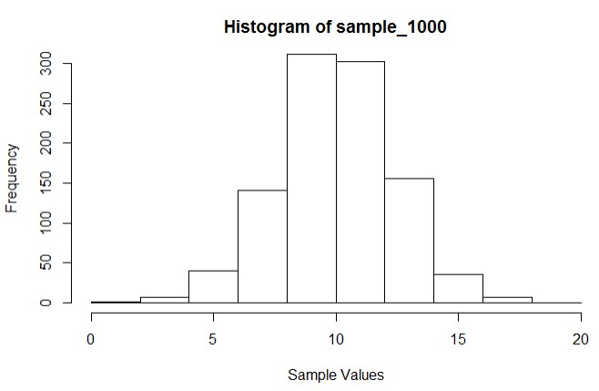

Basic R-Studio User Guide
Introduction
This guide has been designed to introduce you to the scripting environment of R using RStudio. At this point, you should have installed R and RStudio. If not, check out the course page and navigate to “Getting Started with R > Installing R and R-Studio”. There will be some basic instructions on how to get your environment up and running. There is also a brief user guide for RStudio by navigating to “Getting Started with R > Basic RStudio User Guide“.
Problem 1 – Warm up
For the first problem, we would like to generate a sample of a 1000 from the normal distribution with a mean of µ=10 and a standard deviation of σ=2.25.
- Next, we would like to build a histogram using the sample with 10 bins (or classes). Recall that each bin represents an interval and we are tallying the number of observations belonging to the period.
- Last, we would like to represent the data in a normal probability plot and boxplot.
Instructions
- Fire up (open) RStudio
- Create a new R markdown file by “File > New File > R Markdown”
- Fill in the title as Project 1 and select the desired output file.
- Note: If you want to use PDF, you will need to install TeX.
- R Markdown files allow blocks (chunks) of code to exist within text.
- Example:

- To execute the script simply click the “Run” button
- If at any time you are wondering how to use a function, go to the console window and type ? followed by the name of the function. Example: ?View

- Let’s create a new r block/chunk to answer the first question
```{r problem_1}
# Your code should go here.
```-
To get the sample, we will employ a function called rnorm and pass three arguments. N=1000 (The sample size), m=10 (Mean of 10), and sd=2.25 (Standard deviation of 2.25). We would also like to assign this to the variable data_1000. One way to do this is:
sample_1000 <- rnorm(n=1000, m=10, sd=2.25)
- Next we would like to represent the sample in a histogram. To do this we will use the hist function. Use arguments x=sample_1000 (The data to be tallied), xlab=”Sample Values” (The x-axis labels), breaks=10 (Asks R to try to have 10 bins)
Note: R may not create exactly 10 bins based on its algorithm. To gain precision you may provide exact breaks by using breaks= seq(0,20,by=2). This is what we did:
hist(x=sample_1000, xlab="Sample Values",breaks=seq(0,20,by=2))Our plot looked like this (Yours may differ slightly):

-
To get the sample, we will employ a function called rnorm and pass three arguments. N=1000 (The sample size), m=10 (Mean of 10), and sd=2.25 (Standard deviation of 2.25). We would also like to assign this to the variable data_1000. One way to do this is:
- At this point, we recommend playing with different parameters to obtain colors, different titles and more. Hint: use ?hist to learn the parameters and/or google
- As you may have guessed, the function to create a boxplot is boxplot. Try to figure out the parameters.
- ii. To create the normal probability plot use qqnorm. To get a reference line through the data you will need to add qqline(sample_1000, col=2) right after the qqnorm call:
boxplot(x=sample_1000)Note: col=2 represents the color red, col=3 is green for the reference line.
qqnorm(sample_1000); qqline(sample_1000, col=2)
- That is it! Make sure to save your file first, then output/generate your pdf/word/html using the Knit button.